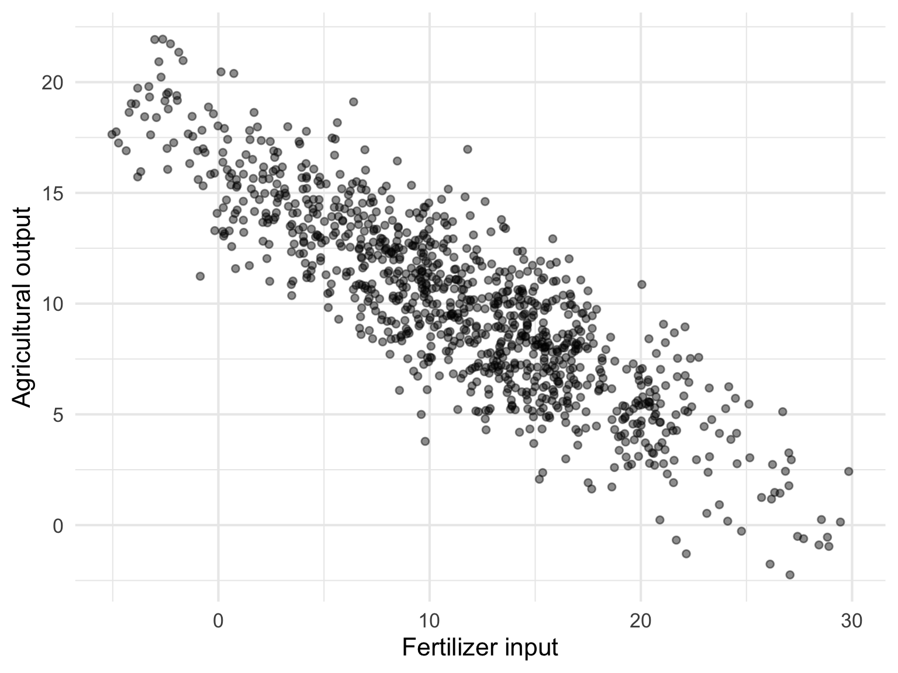
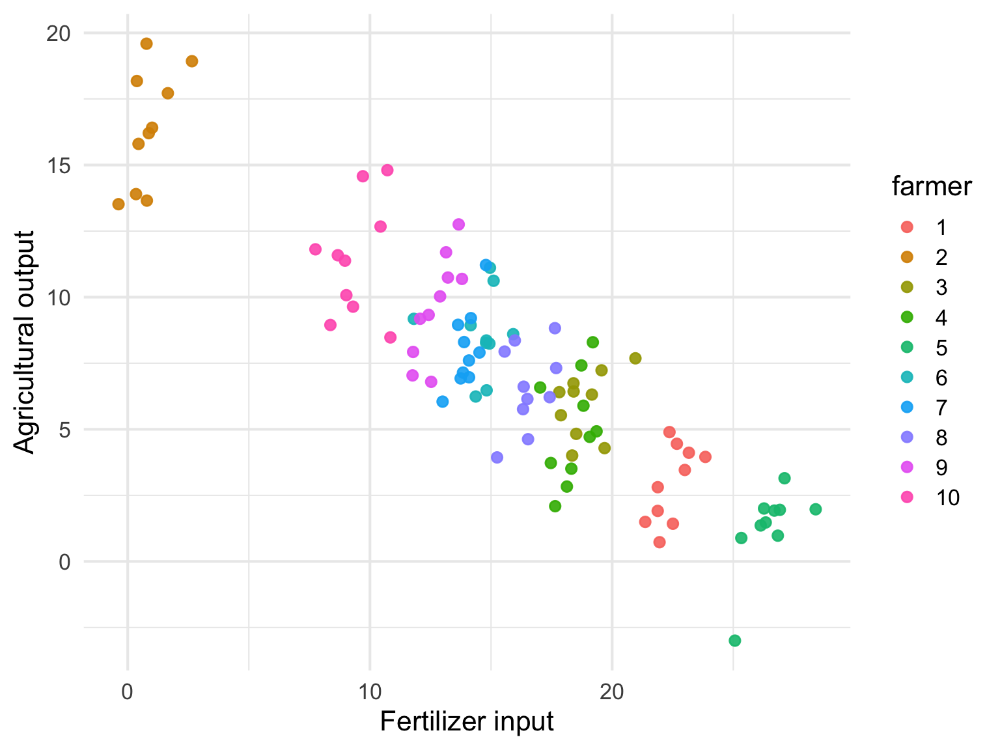
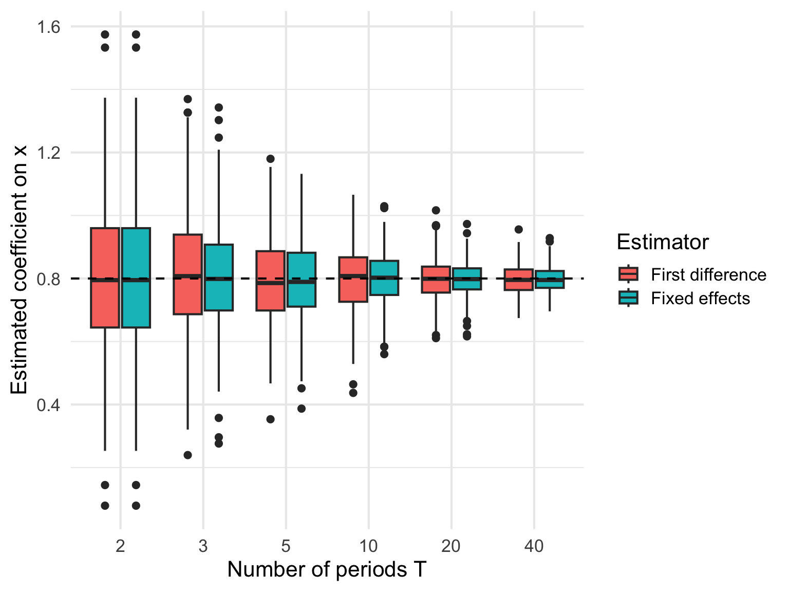
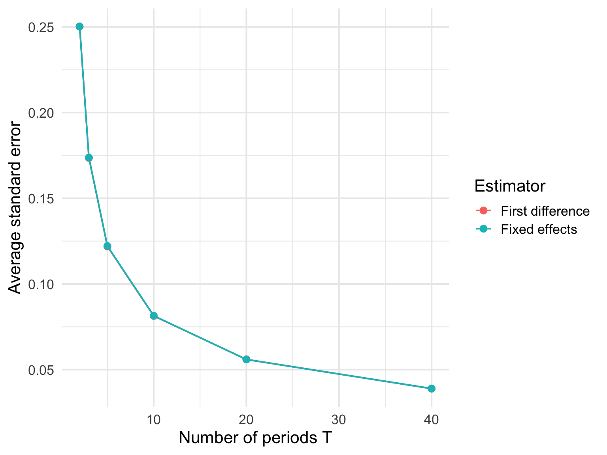
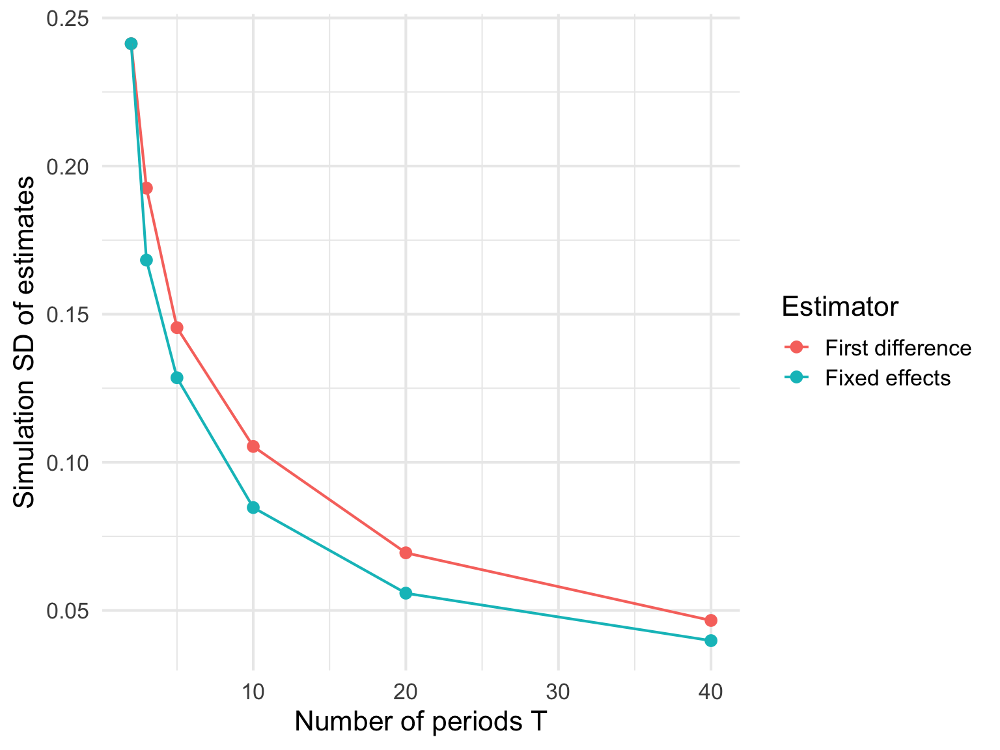

Lecture 9：固定効果モデル
パネルデータ・within 変換・差分回帰・TWFE
重要この講義で押さえたいこと
- 固定効果モデルは、観測されないが時間を通じて不変な要因を取り除くための基本ツールである。
- 識別に使うのは個体間の差ではなく、同じ個体の中での変化である。
- within 変換・差分回帰・TWFE は、同じ発想を別の形で表したものとして読むと整理しやすい。
今回は農家の例から入り、なぜ pooled OLS が誤るのかを見たうえで、fixed effects が何をしているのかを数式とシミュレーションの両方から理解する。後半では short panel、差分回帰、two-way fixed effects、AKM 分解へと進む。
ノートこの lecture の流れ
- まず、パネルデータとは何か、そして pooled OLS がなぜ危ういのかを確認する。
- 次に、固定効果モデルが因果推論のフレームワークでは何を識別しているのかを確認する。
- そのうえで、固定効果モデルをダミー変数法と within 変換の両方から理解する。
- 最後に、short panel、差分回帰、TWFE、AKM 分解へと話を広げる。
導入：固定効果モデルが必要になる場面
今回は重回帰を利用した代表的な識別戦略である固定効果モデルという作戦を取り上げる。
まずは fixed effects の必要性を理解するために、以下のような状況を考えよう。
あなたは農林水産庁の職員である。
ある朝出勤すると、上司から以下のような仕事を投げられた。
昨年度、新しい肥料が開発され、今農業関係者の間で話題沸騰である。 我が省としてもこれに乗じて、どんどん利用を推進したい。 これにあたり、補助金制度を設けることとなった。 ついては、実際にこの肥料がどれだけ農業収穫量を増やすのかを調べてくれ。
ということで早速関係各所に連絡をとり、100軒の農家ごとの
- 肥料投入量
- 農作物収穫量
のデータ 10 ヶ月分を一通り揃えることができた。
さて、散布図にしてみると以下の通りである。
なんと肥料投入量が多いほど農作物の収穫量が低いのである。
これは大発見。肥料の性能は企業が補助金をくすねるためのマーケティング戦略だったのだ。早速君はこの散布図を上司に持っていき、補助金なんて出す必要はありませんと進言する。
君の報告をまに受けた上司は、補助金制度を撤廃した。
しかし、真っ当な教育を受けた別の国の官僚は「この肥料の効果はものすごい」ことを同じデータから発見することができた。
結果、日本に見限られたと感じた開発企業はその国の企業に身売り、君の報告により日本の食料自給率はまた低迷するのであった。
なぜ同じデータを見ても結論が真逆なのか
わかりやすくするために上記のデータから10軒分のデータを抽出して農家ごとに色分けして散布図を描いてみよう

この図を見てわかることは
- 色を一つ固定してみると、肥料投入量が増えると生産量は増えてる
- 生産量が低い農家ほど肥料の投入量が多い
の二点である。
すなわち
そもそも農地には個別の生産性の差があり、持っている農地の生産性が低い農家ほど、この肥料に頼ったために、「肥料投入量が大きいほど生産量が少ない」という観測が生まれた
ということであった。
別国官僚は農地個別の生産性をコントロールすれば、肥料は生産量を上げるということに気づいたのである。
問題は「農地の生産性」は観測できない変数であるという点である。すなわち
y_{it} = \beta_0 + \beta_1 x_{it} + \beta_2 \mathrm{Productivity}_i + u_i
というような回帰分析はできない。
ではどうやって別国官僚は確信を持って「肥料は生産量を増やす」と分かったのであろうか。
ここで登場するのが固定効果モデルである。
しかし固定効果モデルの紹介の前に、まずはこの分析を可能にするパネルデータというデータ構造について説明する。
ノートまずデータ構造を押さえる
fixed effects を理解するには、同じ個体を繰り返し観測している ことが決定的に重要である。ここではまず、クロスセクション・時系列・パネルデータの違いを整理する。
パネルデータ
ここまでの例では、各農家について1回だけ観測しているのではなく、同じ農家を何度も観測していることが重要であった。
今回のデータでは、100軒の農家それぞれについて、10ヶ月分の
- 肥料投入量
- 農作物収穫量
が記録されていた。 つまり、「ある1か月における100軒の農家の比較」だけではなく、同じ農家が時間とともにどう変化したかも見えるデータになっている。
このように、
- 個体（農家、企業、個人、学校など）
- 時間（年、月、四半期、日など）
の二つの軸を持つデータをパネルデータという。
農家 i を時点 t で観測したデータを
(y_{it}, x_{it})
と書くことにすると、
- i は「誰か」を表す添字
- t は「いつか」を表す添字
である。
今回の例では、
- i=1,\dots,100
- t=1,\dots,10
となる。
たとえば y_{it} は農家 i の t 月における収穫量、 x_{it} は農家 i の t 月における肥料投入量である。
クロスセクションデータとの違い
パネルデータの意味を理解するには、まず他の代表的なデータ構造と比べるのが分かりやすい。
クロスセクションデータ
ある一時点だけを切り取って、たくさんの個体を観測したデータである。 たとえば「2025年1月時点での100軒の農家のデータ」だけがあるなら、それはクロスセクションデータである。
この場合、比較できるのは農家どうしだけである。 同じ農家が時間とともにどう変化したかは見えない。
時系列データ
一つの対象について、時間を通じて繰り返し観測したデータである。 たとえば「日本全体の米の生産量を毎月10年間観測したデータ」である。
この場合、時間変化は見えるが、複数の個体の比較はできない。
パネルデータ
複数の個体を、複数時点にわたって繰り返し観測したデータである。
今回のように、複数の農家を複数ヶ月にわたって観測すると、農家間の違いも、同じ農家の中の時間変化も、両方見ることができる。
この「同じ個体を繰り返し観測している」という点が、固定効果モデルを可能にしている。
パネルデータの何がうれしいのか
パネルデータの最大の利点は、同じ個体の中の変化を追えることである。
今回の肥料の例では、知りたいのは
ある農家が普段より多く肥料を投入したとき、普段より収穫量が増えるのか
という関係であった。
これを知るためには、同じ農家を複数回観測していなければならない。 もし各農家を1回ずつしか観測していなければ、「その農家にとって普段より多いかどうか」はそもそも分からない。
したがって、固定効果モデルはパネルデータだからこそ使える識別戦略なのである。
重要ここでの比較対象に注意
pooled OLS が主に使うのは 個体どうしの差 である。ところが、その個体差の中に観測できない固定的な違いが含まれていると、係数は簡単に歪んでしまう。
pooled OLS とは何か
固定効果モデルを理解するためには、その比較対象として pooled OLS を知っておく必要がある。
パネルデータがあるとき、もっとも素朴なやり方は、すべての観測をただ全部まとめて一本の回帰式を推定することである。 これを pooled OLS という。
たとえば今回の例なら、
y_{it} = \beta_0 + \beta_1 x_{it} + u_{it}
という式を、そのまま全ての (i,t) の観測に対して OLS で推定する。
ここで pooled というのは、全部をひとつの大きなサンプルとしてプールしているという意味である。
つまり、pooled OLS は
- 農家1の1月の観測
- 農家1の2月の観測
- 農家2の1月の観測
- 農家2の2月の観測
を全部横並びの観測として扱い、「同じ構造のデータだ」とみなして回帰している。
ノートfixed effects の発想
fixed effects の核心は、各個体に固有の定数項を持たせること、あるいは同じ個体の平均からのズレだけを見ることで、時間不変の欠落変数を差し引く ところにある。
固定効果モデルの考え方
さきほどの例で問題だったのは、農家ごとに
- 土地の質
- 日当たり
- 水はけ
- その農家自身の技術力
- もともとの設備の良さ
のような、観測されていないが、その農家に固有の要因があることであった。
これらは肥料投入量にも生産量にも影響しうる。 したがって、これらを無視して
y_{it} = \beta_0 + \beta_1 x_{it} + u_{it}
のような単純回帰をすると、\beta_1 は肥料の因果効果を表さなくなる。
そこで、農家 i に固有の、時間を通じてあまり変わらない要因をひとまとめにして
\alpha_i
と書くことにする。 すると、モデルは
y_{it} = \beta x_{it} + \alpha_i + u_{it}
と表せる。
ここで
- y_{it} は農家 i の時点 t における生産量
- x_{it} は農家 i の時点 t における肥料投入量
- \alpha_i は農家 i に固有の、時間を通じて変わらない要因
- u_{it} は時点ごとの一時的なショック
である。
この \alpha_i が、先ほど文章で説明していた「農地の質」や「農家の基礎的な生産性」に対応する。
固定効果モデルの核心は、
\alpha_i が観測できなくても、パネルデータで同じ農家を何回も観測していれば、その影響を取り除ける
という点にある。
固定効果モデルが見ているのは、農家どうしの違いではない。 見ているのは、
同じ農家の中で、いつもより肥料を多く入れたときに、いつもより生産量が増えるか
である。
つまり、固定効果モデルは個体間比較ではなく、個体内比較を使う。
先ほどの散布図で言えば、
- 「農家Aは農家Bより肥料を多く使っている」
- 「でも農家Aの方が生産量が低い」
という比較は危ない。なぜなら、農地の質が違うからである。
その代わりに固定効果モデルは、
- 農家Aの中で、今月は普段より肥料を多く使った
- そのとき農家Aの生産量は普段より増えたか
を見る。
この考え方なら、農家Aがもともと良い土地を持っているか悪い土地を持っているかは固定なので、比較の邪魔をしにくい。
因果推論のフレームワークで見る固定効果モデル
ここで一度、前回の因果推論のフレームワークに戻って、固定効果モデルが何をしているのかを整理しておこう。
今回の問いは、
肥料投入量を増やすと、農作物の収穫量はどれだけ増えるのか
である。
つまり、処置は x_{it}、アウトカムは y_{it} である。
ただし、ここでの処置 x_{it} は 0/1 のダミーではなく、肥料投入量という連続変数である。したがって潜在アウトカムも、たとえば
Y_{it}(x)
のように書くとよい。
これは、
農家 i が時点 t に肥料を x だけ投入したときの潜在的な収穫量
を表す。
本当に知りたいのは、たとえば
Y_{it}(x+1)-Y_{it}(x)
のような差である。
これは、
同じ農家が、同じ時点に、肥料を1単位多く入れていたら収穫量はどれだけ変わったか
という反実仮想である。
もちろん、同じ農家・同じ時点について、肥料投入量が x の世界と x+1 の世界を同時に観測することはできない。
したがって固定効果モデルも、結局は前回見た因果推論の問題と同じである。
見えない反実仮想を、データの中のどの比較で置き換えるのか
が問題になる。
固定効果モデルの答えは、
同じ農家の中で、肥料投入量が普段より多い時期と少ない時期を比べる
というものである。
つまり、農家Aと農家Bを比べるのではない。
農家A自身について、
- いつもより肥料を多く使った月
- いつもより肥料を少なく使った月
を比べる。
この比較を使えば、農家Aがもともと持っている土地の質、日当たり、水はけ、農家の基礎的な技術力のような、時間を通じて変わらない要因は差し引ける。
数式で言えば、潜在アウトカムの背後に
Y_{it}(x) = \beta x + \alpha_i + u_{it}
のような構造を考えている。
ここで \alpha_i は農家 i に固有の時間不変な要因である。
固定効果モデルは、この \alpha_i が観測できなくても、同じ農家を繰り返し観測することで消してしまう。
したがって、固定効果モデルが識別しているのは、ざっくり言えば
同じ個体の中で、説明変数が変化したときに、アウトカムがどれだけ変化するか
である。
ヒントLecture 7 の言葉で言うと
固定効果モデルは、見えない反実仮想を「同じ個体の別時点の観測」で埋めようとする方法である。個体間の違いを使うのではなく、個体内の変化を使うことで、時間不変の交絡要因を取り除く。
ただし、ここで何でも解決したと思ってはいけない。
固定効果モデルが因果効果を識別するためには、重要な仮定が必要である。
直感的には、
同じ農家の中で肥料投入量が増減する理由が、一時的な収穫ショック u_{it} と関係していない
という仮定である。
たとえば、農家が
- 今年は天候が悪そうだから肥料を増やした
- 病害虫が出そうだから肥料を増やした
- 収穫が伸びそうな月だけ肥料を増やした
という行動をしていると、肥料投入量の変化は一時的なショックと関係してしまう。
この場合、固定効果で土地の質を取り除いても、\beta を肥料の因果効果として読むのは難しい。
数式では、かなり強く書くと
E[u_{it}\mid x_{i1},x_{i2},\dots,x_{iT},\alpha_i]=0
のような仮定が必要になる。
これは strict exogeneity と呼ばれる。
この仮定は、
農家固有の固定的な特徴を取り除いたあとで、肥料投入量の時系列的な変化が、収穫量に影響する一時的な未観測要因と体系的に結びついていない
という意味である。
警告固定効果モデルの限界
固定効果モデルが取り除けるのは、基本的には時間を通じて変わらない未観測要因である。時間とともに変わる交絡要因、処置のタイミングに影響する一時的ショック、逆の因果関係がある場合には、固定効果を入れても因果効果としてはまだ詰め切れていない可能性がある。
したがって、固定効果モデルは因果推論のフレームワークでは次のように理解できる。
- 知りたい反実仮想は、「同じ個体が別の処置水準を取っていたらどうなったか」である。
- その反実仮想を、同じ個体の別時点の観測で近似する。
- そのために、時間不変の未観測要因 \alpha_i を取り除く。
- ただし、時間変動する未観測要因 u_{it} が処置と相関していない、という仮定が必要である。
この整理を頭に置いておくと、次に見るダミー変数法や within 変換は、単なる計算テクニックではなく、
反実仮想を作るために、個体内比較だけを取り出す操作
として理解できる。
ここまでで、fixed effects モデルの発想はかなり見えてきたと思う。 残る問題は、
では、この発想を実際にはどうやって推定するのか
である。
つまり、観測できない \alpha_i を「消したい」と言うだけではまだ回帰分析になっていない。 これ以降は、fixed effects モデルをどうやって普通の回帰分析の形に落とし込むのかを見ていく。 代表的な方法は二つある。 一つは個体ごとのダミー変数を直接入れる方法であり、もう一つは各個体の平均を差し引く方法である。
1. ダミー変数を入れる方法
固定効果モデルの一つ目の実装方法は、各農家ごとのダミー変数を入れる方法である。 これを LSDV (least squares dummy variable) と呼ぶこともある。
農家が N 軒あるとすると、例えば農家1を基準にして、
D_{2i}, D_{3i}, \dots, D_{Ni}
というダミー変数を作る。 ここで D_{ji}=1 は「農家 i が農家 j である」ことを表す。
すると回帰式は
y_{it} = \beta x_{it} + \gamma_2 D_{2i} + \gamma_3 D_{3i} + \cdots + \gamma_N D_{Ni} + u_{it}
となる。
これは見かけ上はただの重回帰である。 違いは、説明変数の中に個体ごとの切片の違いを表すダミー変数を大量に入れている点だけである。
この回帰は何をしているのか
この回帰では、各農家ごとに異なる切片を許している。
つまり、
- 農家Aはもともと生産量が高い
- 農家Bはもともと生産量が低い
という違いを、ダミー変数が吸収してくれる。
したがって、\beta は
農家ごとの平均的な生産性の違いを一定としたとき、肥料投入量が増えると生産量がどれだけ変わるか
を表す。
先ほどの問題で言えば、
- 土地が良い農家
- 土地が悪い農家
の違いによる切片のズレを全部ダミー変数で吸収し、その上で肥料の効果を見ているのである。
直感
ダミー変数を入れる方法の直感は単純で、
「農家ごとに別々の基準線を持たせて、その上で肥料の効果を測る」
ということである。
単純回帰では全農家に一本の共通切片しかなかった。 それでは、もともとの土地の質の違いを無視してしまう。 そこで各農家に専用の切片を持たせるのである。
ダミー変数法の推定式
定数項も含めて丁寧に書くと、
y_{it} = \beta_0 + \beta_1 x_{it} + \gamma_2 D_{2i} + \cdots + \gamma_N D_{Ni} + u_{it}
である。
ここで基準となる農家1についてはダミーを入れない。 これは完全多重共線性を避けるためである。
このとき
- \beta_0 は基準農家の切片
- \gamma_j は農家 j の切片が基準農家とどれだけ違うか
を表す。
そして \beta_1 が、知りたい肥料の効果である。
この方法の長所と短所
この方法の長所は、固定効果が何を意味しているかが見やすいことである。 各農家にダミーを入れているので、「農家ごとの違いをコントロールしている」ということが式から直接分かる。
一方で、個体数が非常に多いとダミー変数の数も膨大になる。 農家が100軒ならまだよいが、企業が10万社あるようなデータでは、企業固定効果だけで約10万個の説明変数が追加される。 これは単に回帰表が長くなるという話ではない。
通常の重回帰は、説明変数を並べた巨大な行列を作り、その行列を使って係数を計算する。 ダミー変数を10万個入れると、
- データ行列の列数が一気に増える
- コンピュータのメモリを大量に使う
- 行列計算が重くなる
- 完全多重共線性やほぼ共線性の扱いも面倒になる
- 出力される係数のほとんどが、関心のない固定効果になってしまう
という問題が出る。
特に、標準的な回帰関数は内部で明示的なデザイン行列を作ることが多い。 10万個の企業ダミーや100万人分の個人ダミーを素直に作ると、そもそも行列をメモリに載せるだけで大変である。 しかも研究者が知りたいのは多くの場合、10万個の企業ダミー係数そのものではなく、固定効果を取り除いた後の \beta_1 である。
したがって、ダミー変数法は発想を理解するには非常に良いが、大規模データでは固定効果を「明示的に大量のダミーとして作る」のではなく、平均との差し引きや専用アルゴリズムで固定効果を吸収する方が自然である。
そこでよく使われるのが、次の平均差し引き法である。
2. 平均からの差に変換する方法
固定効果モデルの二つ目の実装方法は、各農家の平均を引いてしまう方法である。 これを within transformation や demeaning と呼ぶ。
もとのモデルは
y_{it} = \beta x_{it} + \alpha_i + u_{it}
であった。
ここで農家 i について、時間平均を取る。 時点数を T とすると、
\bar y_i = \frac{1}{T}\sum_{t=1}^T y_{it}, \qquad \bar x_i = \frac{1}{T}\sum_{t=1}^T x_{it}, \qquad \bar u_i = \frac{1}{T}\sum_{t=1}^T u_{it}
である。
\alpha_i は時間を通じて一定なので、その平均も \alpha_i のままである。 したがって元の式を時間平均すると、
\bar y_i = \beta \bar x_i + \alpha_i + \bar u_i
となる。
ここでこの式を元の式から引くと、
y_{it} - \bar y_i = \beta (x_{it} - \bar x_i) + (\alpha_i - \alpha_i) + (u_{it} - \bar u_i)
すなわち
y_{it} - \bar y_i = \beta (x_{it} - \bar x_i) + (u_{it} - \bar u_i)
となる。
ここで重要なのは、\alpha_i が完全に消えていることである。
これが固定効果モデルの最重要ポイントである。
この変換の意味
この変換は、各農家について
- その農家のいつもの生産量からどれだけズレたか
- その農家のいつもの肥料投入量からどれだけズレたか
だけを見る、という操作である。
たとえば農家Aについて、
- 今月の肥料投入量がその農家の平均より2だけ大きい
- 今月の生産量がその農家の平均より1.5だけ大きい
という情報だけを使う。
すると、農家Aがもともと良い土地を持っているか悪い土地を持っているかは、平均との差を取った時点で消えてしまう。
固定効果モデルは、まさにこの「平均との差で比較する」という考え方に基づいている。
平均差し引き後の回帰
新しい変数を
\tilde y_{it} = y_{it} - \bar y_i, \qquad \tilde x_{it} = x_{it} - \bar x_i
と書けば、推定すべき式は
\tilde y_{it} = \beta \tilde x_{it} + \tilde u_{it}
となる。 ここで \tilde u_{it}=u_{it}-\bar u_i である。
つまり、各農家の平均を引いた後のデータに対して、単純回帰をすればよい。
この方法では農家ダミーを明示的に作らなくてよい。 そのため、固定効果推定の理論を考えるときにも、実務で高速に計算するときにも非常に便利である。
3. なぜこの二つは同じ推定値になるのか
ここまでで、固定効果モデルの推定法として
- 農家ダミーを入れる方法
- 各農家平均を引く方法
の二つを見た。
見た目はかなり違うが、実はこの二つは同じ \beta を推定する。 これが固定効果モデルの重要な事実である。
直感的な説明
ダミー変数法は、各農家ごとに別々の切片を持たせる方法だった。 平均差し引き法は、各農家ごとの平均を引いて切片の違いを消す方法だった。
どちらもやっていることは同じである。 それは
農家ごとに固定的な違いを取り除いた上で、農家内の変動だけを使って \beta を推定する
ということである。
したがって、どちらの方法でも最終的に使っている情報は同じになる。 すなわち、
- 農家間の違いは捨てる
- 農家内の変化だけを使う
のである。
もう少し数式で見る
ダミー変数法で推定している式は
y_{it} = \beta x_{it} + \alpha_i + u_{it}
と同じ意味である。
このモデルでは、各農家ごとの切片 \alpha_i が自由に選ばれる。 OLS は、\beta をある値に固定したとき、各農家の切片として最適なものを選ぶが、それは結局
\hat\alpha_i = \bar y_i - \beta \bar x_i
になる。
つまり、各農家の平均にぴったり合うように切片が決まるのである。
これを元の式に代入すると、
y_{it} = \beta x_{it} + (\bar y_i - \beta \bar x_i) + u_{it}
整理すると
y_{it} - \bar y_i = \beta (x_{it} - \bar x_i) + u_{it}
となる。
これはまさに、平均差し引き法で推定していた式そのものである。
したがって、ダミー変数法で \beta を求めても、平均との差し引き法で \beta を求めても、結果は一致する。
何が一致しているのか
一致するのは、説明変数の係数である。
つまり、
- ダミー変数を入れた回帰の \hat\beta
- 平均差し引き後の回帰の \hat\beta
は同じになる。
一方で、切片の見え方は同じではない。 平均との差し引き後の回帰では各個体平均を引いているため、もはや元の意味での切片は前面に出てこない。 しかし、知りたいのは通常 \beta なので、そこが一致していれば十分である。
4. 固定効果モデルの識別仮定
固定効果モデルは強力だが、万能ではない。 成り立ってほしい仮定は、
E[u_{it} \mid x_{i1}, x_{i2}, \dots, x_{iT}, \alpha_i] = 0
である。
これは、農家固有の固定的な要因 \alpha_i をコントロールしたうえで、各時点の誤差項 u_{it} が説明変数と相関しない、という条件である。
直感的には、
- 時間を通じて変わらない omitted variable は fixed effects で除去できる
- しかし時間とともに変化する omitted variable は除去できない
ということである。
たとえば、
- 今年だけ異常気象が起きた
- その年は肥料投入量も増え、生産量にも影響した
という場合、その異常気象がコントロールされていなければ、固定効果モデルでもバイアスが残りうる。
したがって固定効果モデルは、
時間不変の omitted variable に強い
が、
時間変動する omitted variable まで自動的に消してくれるわけではない
という点を理解する必要がある。
ノート理屈と結果をつなぐ
ここでは pooled OLS、ダミー変数法、within 回帰を並べて、fixed effects が何を回収しているのかを数値で確認する。
シミュレーションでチェック
まずは先ほどのデータのシミュレーションコードを載せる。
農地の生産性が低いところほどたくさんの肥料を投下するようになっていることに注意しよう。
library(tidyverse)
set.seed(123)
# 農家数と年数
N <- 100
Tt <- 10
# 真の肥料効果（本当はプラス）
beta <- 0.8
# 農家ごとの固定的な土地の質
farm_df <- tibble(
farm_id = 1:N,
land_quality = rnorm(N, mean = 0, sd = 4)
)
# パネルデータ生成
df <- expand_grid(
farm_id = 1:N,
year = 1:Tt
) %>%
left_join(farm_df, by = "farm_id") %>%
mutate(
# 土地の質が低いほど肥料を多く使う
fertilizer = 12 - 1.8 * land_quality + rnorm(n(), sd = 1.0),
# 一時的ショック
shock = rnorm(n(), sd = 1.5),
# 収穫量：肥料の真の効果は正だが、土地の質の影響がかなり大きい
output = beta * fertilizer + 2.5 * land_quality + shock
)
ggplot(df, aes(x = fertilizer, y = output)) +
geom_point(alpha = 0.45, size = 1.8) +
labs(
x = "Fertilizer input",
y = "Agricultural output"
) +
theme_minimal(base_size = 16)
まず、比較のために単純な pooled OLS を回す。 これは農家ごとの固定的な生産性の違いを無視して、
y_{it} = \beta_0 + \beta_1 x_{it} + u_{it}
をそのまま推定するものである。
その次に、
- 農家ごとのダミー変数を全部入れた fixed effects 回帰
- 各農家の平均を引いた demean 回帰
を順に回す。
理論上は、後ろの二つの \hat\beta_1 は一致するはずである。
1. まず pooled OLS を回す
以下では、収穫量を肥料投入量に単純回帰する。
pooled_fit <- lm(output ~ fertilizer, data = df)
summary(pooled_fit)
Call:
lm(formula = output ~ fertilizer, data = df)
Residuals:
Min 1Q Median 3Q Max
-7.1023 -1.5046 0.0454 1.3622 7.1748
Coefficients:
Estimate Std. Error t value Pr(>|t|)
(Intercept) 16.20238 0.13229 122.5 <2e-16 ***
fertilizer -0.54326 0.01004 -54.1 <2e-16 ***
---
Signif. codes: 0 '***' 0.001 '**' 0.01 '*' 0.05 '.' 0.1 ' ' 1
Residual standard error: 2.113 on 998 degrees of freedom
Multiple R-squared: 0.7457, Adjusted R-squared: 0.7454
F-statistic: 2926 on 1 and 998 DF, p-value: < 2.2e-16この回帰は、農家ごとの土地の質の違いを無視している。 したがって、推定された係数は肥料の真の効果ではなく、
- 肥料の効果
- 土地の質の違い
が混ざったものになってしまう。
このシミュレーションでは、土地の質が悪い農家ほど肥料を多く投入するようにデータを作っていた。 そのため、pooled OLS の係数は負になったり、少なくとも真の値よりかなり下に歪むはずである。
2. 農家ダミーを全部入れた fixed effects 回帰
次に、各農家ごとのダミー変数を入れた回帰を行う。
推定式は
y_{it} = \beta_0 + \beta_1 x_{it} + \alpha_2 D_{2i} + \cdots + \alpha_N D_{Ni} + u_{it}
である。 R では factor(farm_id) を入れればよい。
fe_dummy_fit <- lm(output ~ fertilizer + factor(farm_id), data = df)
summary(fe_dummy_fit)
Call:
lm(formula = output ~ fertilizer + factor(farm_id), data = df)
Residuals:
Min 1Q Median 3Q Max
-4.8800 -1.0038 -0.0128 1.0081 4.8336
Coefficients:
Estimate Std. Error t value Pr(>|t|)
(Intercept) -7.77972 0.89940 -8.650 < 2e-16 ***
fertilizer 0.91226 0.04902 18.608 < 2e-16 ***
factor(farm_id)2 4.39643 0.67446 6.518 1.18e-10 ***
factor(farm_id)3 23.29518 0.99042 23.521 < 2e-16 ***
factor(farm_id)4 7.20844 0.69483 10.374 < 2e-16 ***
factor(farm_id)5 7.75208 0.70943 10.927 < 2e-16 ***
factor(farm_id)6 24.83397 1.02310 24.273 < 2e-16 ***
factor(farm_id)7 11.17632 0.74093 15.084 < 2e-16 ***
factor(farm_id)8 -7.47605 0.71774 -10.416 < 2e-16 ***
factor(farm_id)9 -1.17206 0.66800 -1.755 0.079673 .
factor(farm_id)10 2.21022 0.66581 3.320 0.000938 ***
factor(farm_id)11 19.87044 0.89244 22.265 < 2e-16 ***
factor(farm_id)12 9.30646 0.73571 12.650 < 2e-16 ***
factor(farm_id)13 10.45051 0.73786 14.163 < 2e-16 ***
factor(farm_id)14 7.32736 0.70078 10.456 < 2e-16 ***
factor(farm_id)15 0.92072 0.66507 1.384 0.166576
factor(farm_id)16 26.07541 1.04587 24.932 < 2e-16 ***
factor(farm_id)17 12.54612 0.74883 16.754 < 2e-16 ***
factor(farm_id)18 -14.46353 0.84816 -17.053 < 2e-16 ***
factor(farm_id)19 12.76079 0.78639 16.227 < 2e-16 ***
factor(farm_id)20 1.90653 0.66526 2.866 0.004256 **
factor(farm_id)21 -5.51258 0.69106 -7.977 4.55e-15 ***
factor(farm_id)22 4.06336 0.67169 6.049 2.13e-09 ***
factor(farm_id)23 -4.35633 0.69370 -6.280 5.27e-10 ***
factor(farm_id)24 -2.00199 0.66858 -2.994 0.002825 **
factor(farm_id)25 -0.88663 0.66623 -1.331 0.183585
factor(farm_id)26 -11.84782 0.78130 -15.164 < 2e-16 ***
factor(farm_id)27 16.31838 0.81051 20.134 < 2e-16 ***
factor(farm_id)28 7.41508 0.70707 10.487 < 2e-16 ***
factor(farm_id)29 -5.86767 0.70210 -8.357 2.42e-16 ***
factor(farm_id)30 20.25181 0.92115 21.985 < 2e-16 ***
factor(farm_id)31 11.07551 0.74802 14.806 < 2e-16 ***
factor(farm_id)32 3.68227 0.66989 5.497 5.04e-08 ***
factor(farm_id)33 16.54762 0.81448 20.317 < 2e-16 ***
factor(farm_id)34 15.19541 0.82725 18.369 < 2e-16 ***
factor(farm_id)35 14.93311 0.82241 18.158 < 2e-16 ***
factor(farm_id)36 15.05410 0.78092 19.277 < 2e-16 ***
factor(farm_id)37 12.54526 0.75247 16.672 < 2e-16 ***
factor(farm_id)38 4.59850 0.68136 6.749 2.67e-11 ***
factor(farm_id)39 3.99568 0.66656 5.995 2.95e-09 ***
factor(farm_id)40 2.78174 0.66622 4.175 3.26e-05 ***
factor(farm_id)41 -0.53783 0.66649 -0.807 0.419906
factor(farm_id)42 4.24069 0.67411 6.291 4.93e-10 ***
factor(farm_id)43 -7.31634 0.72219 -10.131 < 2e-16 ***
factor(farm_id)44 30.47927 1.14562 26.605 < 2e-16 ***
factor(farm_id)45 19.97000 0.89290 22.365 < 2e-16 ***
factor(farm_id)46 -6.07863 0.70007 -8.683 < 2e-16 ***
factor(farm_id)47 2.10713 0.66592 3.164 0.001607 **
factor(farm_id)48 1.14834 0.66516 1.726 0.084614 .
factor(farm_id)49 14.85786 0.81479 18.235 < 2e-16 ***
factor(farm_id)50 5.09297 0.68303 7.456 2.09e-13 ***
factor(farm_id)51 9.72458 0.72274 13.455 < 2e-16 ***
factor(farm_id)52 6.42359 0.68873 9.327 < 2e-16 ***
factor(farm_id)53 7.05023 0.68492 10.294 < 2e-16 ***
factor(farm_id)54 21.06967 0.95124 22.150 < 2e-16 ***
factor(farm_id)55 3.90365 0.67131 5.815 8.42e-09 ***
factor(farm_id)56 22.15443 0.97751 22.664 < 2e-16 ***
factor(farm_id)57 -9.90590 0.76878 -12.885 < 2e-16 ***
factor(farm_id)58 13.33417 0.78554 16.975 < 2e-16 ***
factor(farm_id)59 7.43104 0.70746 10.504 < 2e-16 ***
factor(farm_id)60 8.60419 0.71036 12.112 < 2e-16 ***
factor(farm_id)61 10.92187 0.74160 14.727 < 2e-16 ***
factor(farm_id)62 1.13287 0.66527 1.703 0.088934 .
factor(farm_id)63 1.90609 0.66888 2.850 0.004476 **
factor(farm_id)64 -4.46718 0.69458 -6.431 2.05e-10 ***
factor(farm_id)65 -5.07253 0.70612 -7.184 1.42e-12 ***
factor(farm_id)66 9.92601 0.72283 13.732 < 2e-16 ***
factor(farm_id)67 11.29057 0.73741 15.311 < 2e-16 ***
factor(farm_id)68 7.21862 0.69522 10.383 < 2e-16 ***
factor(farm_id)69 16.59443 0.84957 19.533 < 2e-16 ***
factor(farm_id)70 28.52511 1.11210 25.650 < 2e-16 ***
factor(farm_id)71 1.06832 0.66512 1.606 0.108580
factor(farm_id)72 -18.44644 0.90727 -20.332 < 2e-16 ***
factor(farm_id)73 17.66553 0.86949 20.317 < 2e-16 ***
factor(farm_id)74 -1.63877 0.66915 -2.449 0.014514 *
factor(farm_id)75 -1.39830 0.67030 -2.086 0.037254 *
factor(farm_id)76 17.77158 0.85069 20.891 < 2e-16 ***
factor(farm_id)77 3.51387 0.66861 5.255 1.84e-07 ***
factor(farm_id)78 -6.01302 0.72220 -8.326 3.09e-16 ***
factor(farm_id)79 8.36959 0.70854 11.812 < 2e-16 ***
factor(farm_id)80 5.08077 0.67689 7.506 1.47e-13 ***
factor(farm_id)81 6.44353 0.68656 9.385 < 2e-16 ***
factor(farm_id)82 11.05704 0.72951 15.157 < 2e-16 ***
factor(farm_id)83 2.14535 0.66538 3.224 0.001309 **
factor(farm_id)84 12.85690 0.78472 16.384 < 2e-16 ***
factor(farm_id)85 4.71297 0.67430 6.989 5.38e-12 ***
factor(farm_id)86 10.48765 0.73160 14.335 < 2e-16 ***
factor(farm_id)87 18.23201 0.87524 20.831 < 2e-16 ***
factor(farm_id)88 11.35031 0.75604 15.013 < 2e-16 ***
factor(farm_id)89 3.32316 0.66693 4.983 7.52e-07 ***
factor(farm_id)90 18.67189 0.88813 21.024 < 2e-16 ***
factor(farm_id)91 17.02900 0.85218 19.983 < 2e-16 ***
factor(farm_id)92 12.38551 0.74832 16.551 < 2e-16 ***
factor(farm_id)93 9.35103 0.70670 13.232 < 2e-16 ***
factor(farm_id)94 -0.19635 0.66635 -0.295 0.768320
factor(farm_id)95 20.70188 0.94054 22.011 < 2e-16 ***
factor(farm_id)96 0.40165 0.66631 0.603 0.546792
factor(farm_id)97 29.90382 1.14814 26.046 < 2e-16 ***
factor(farm_id)98 22.25247 0.98761 22.532 < 2e-16 ***
factor(farm_id)99 2.71259 0.67299 4.031 6.03e-05 ***
factor(farm_id)100 -4.88459 0.69327 -7.046 3.67e-12 ***
---
Signif. codes: 0 '***' 0.001 '**' 0.01 '*' 0.05 '.' 0.1 ' ' 1
Residual standard error: 1.487 on 899 degrees of freedom
Multiple R-squared: 0.8866, Adjusted R-squared: 0.874
F-statistic: 70.3 on 100 and 899 DF, p-value: < 2.2e-16この回帰では、各農家ごとに異なる切片を持たせている。 したがって、農家ごとの固定的な土地の質の違いはダミー変数が吸収してくれる。
その結果、fertilizer の係数は
同じ農家の中で肥料投入量が増えたときに、生産量がどれだけ増えるか
を表すようになる。
今度はちゃんと正の値になっていることを確認しよう。
3. demean した within 回帰
今度は、各農家について平均を引いたデータを作り、その上で回帰を行う。
農家 i について、
\tilde y_{it} = y_{it} - \bar y_i, \qquad \tilde x_{it} = x_{it} - \bar x_i
を定義すると、fixed effects モデルは
\tilde y_{it} = \beta_1 \tilde x_{it} + \tilde u_{it}
と書ける。
これをそのまま実装すると以下のようになる。
df_demeaned <- df %>%
group_by(farm_id) %>%
mutate(
output_dm = output - mean(output),
fertilizer_dm = fertilizer - mean(fertilizer)
) %>%
ungroup()
within_fit <- lm(output_dm ~ fertilizer_dm - 1, data = df_demeaned)
summary(within_fit)
Call:
lm(formula = output_dm ~ fertilizer_dm - 1, data = df_demeaned)
Residuals:
Min 1Q Median 3Q Max
-4.8800 -1.0038 -0.0128 1.0081 4.8336
Coefficients:
Estimate Std. Error t value Pr(>|t|)
fertilizer_dm 0.91226 0.04651 19.62 <2e-16 ***
---
Signif. codes: 0 '***' 0.001 '**' 0.01 '*' 0.05 '.' 0.1 ' ' 1
Residual standard error: 1.41 on 999 degrees of freedom
Multiple R-squared: 0.2781, Adjusted R-squared: 0.2773
F-statistic: 384.8 on 1 and 999 DF, p-value: < 2.2e-16ここで - 1 を入れているのは、平均との差を取った後のデータには切片が不要だからである。 この回帰は、農家内の変動だけを使って肥料の効果を推定している。
4. 三つの推定結果を並べて比較する
では、pooled OLS、ダミー変数 fixed effects、demean 回帰の係数を並べてみよう。
result_table <- tibble(
model = c(
"Pooled OLS",
"FE with farm dummies",
"FE with demeaning"
),
estimate = c(
coef(pooled_fit)["fertilizer"],
coef(fe_dummy_fit)["fertilizer"],
coef(within_fit)["fertilizer_dm"]
)
)
result_table# A tibble: 3 × 2
model estimate
<chr> <dbl>
1 Pooled OLS -0.543
2 FE with farm dummies 0.912
3 FE with demeaning 0.912この表を見ると、
- pooled OLS の係数は真の値から大きくずれている
- fixed effects を使うと正の効果が回復する
- ダミー変数法と demean 法の係数は一致する
ことが確認できるはずである。
このシミュレーションでは真の肥料効果を
\beta = 0.8
としてデータを作っていた。 したがって、fixed effects の二つの推定値はこの値に近くなるはずである。
5. 推定結果をどう解釈すればよいか
この結果は、固定効果モデルが何をしているかを非常によく表している。
pooled OLS は、農家どうしの違いまで使ってしまう。 そのため、
- 土地の質が低い農家ほど肥料を多く使う
- しかし土地の質が低いせいで収穫量は低い
という構造を、あたかも「肥料が悪い」かのように誤って解釈してしまう。
一方、fixed effects 回帰は農家ごとの固定的な違いを取り除く。 そのため、
同じ農家の中で、普段より肥料を多く入れた月には、普段より収穫量も増えているか
だけを使って推定できる。
この比較こそが、固定効果モデルの本質である。
警告fixed effects にも弱点がある
fixed effects は強力だが万能ではない。特に T が短いと、個体内変動の乏しさ・測定誤差・大きな標準誤差といった問題が目立ちやすい。
固定効果モデルの諸問題
実務上、多くのケースで固定効果モデルを推定する際の最大の問題は観測されている期間 T が短いことである。
固定効果モデルは、各個体について
- その個体の平均からどれだけ説明変数がずれたか
- その個体の平均からどれだけ結果変数がずれたか
を使って識別する方法だった。 したがって、同じ個体を何度も観測していることが本質的に重要である。
しかし実際のデータでは、個体数 N は大きくても、各個体について観測されている時点数 T はそれほど大きくないことが多い。 たとえば
- 企業を3年分だけ観測したデータ
- 家計を2期だけ追ったデータ
- 学校を4年分だけ観測したデータ
などである。
このように、N は大きいが T は小さいパネルをshort panelという。
なぜ T が短いと問題なのか
固定効果モデルは、個体間の違いを捨てて、個体内の変化だけで係数を推定する。
したがって、T が短いと、そもそも各個体の中で利用できる変化があまり多くない。
たとえば、ある農家について10年分のデータがあれば、
- 平年より肥料が多い年
- 平年より肥料が少ない年
- かなり多い年
- やや少ない年
など、個体内の変動をかなり豊かに観察できる。
しかし2期しかなければ、その農家について見えるのは
- 1期目と2期目の差
だけである。
つまり、T が短いと、固定効果モデルが利用できる情報量がかなり限られる。
T=2 のとき、fixed effects はどうなるか
short panel の極端な例として、各個体が2期しか観測されていない場合を考えよう。
もとの固定効果モデルは
y_{it} = \beta x_{it} + \alpha_i + u_{it}
である。
ここで t=1,2 の2期しかないとする。 すると各個体について2本の式がある。
y_{i1} = \beta x_{i1} + \alpha_i + u_{i1}
y_{i2} = \beta x_{i2} + \alpha_i + u_{i2}
この2式を引くと、
y_{i2} - y_{i1} = \beta (x_{i2} - x_{i1}) + (u_{i2} - u_{i1})
となる。
ここで \alpha_i は消えている。 つまり、2期しかない場合、fixed effects は1階差分を取ることと本質的に同じである。
ノートT=2 ならどうなるか
時点が 2 つしかないとき、fixed effects は差分回帰と非常に近い形になる。この対応関係を押さえると、within 変換の意味がかなり見えやすくなる。
差分回帰
このように、固定効果モデルの近縁として登場するのが差分回帰である。
差分回帰では、各個体について前期との差を取り、
\Delta y_i = y_{i2} - y_{i1}, \qquad \Delta x_i = x_{i2} - x_{i1}
を作る。 すると推定式は
\Delta y_i = \beta \Delta x_i + \Delta u_i
となる。
これを OLS で推定するのが差分回帰である。
差分を取ることで、時間を通じて一定な個体要因 \alpha_i は自動的に消える。 したがって差分回帰も、固定効果モデルと同じく時間不変の omitted variable を除去する方法だと理解できる。
差分回帰の直感
差分回帰の考え方は非常に単純である。
各個体について、
- 結果変数がどれだけ変わったか
- 説明変数がどれだけ変わったか
だけを見る。
今回の肥料の例なら、
- 今期は前期に比べて肥料投入量がどれだけ増えたか
- それに対応して収穫量がどれだけ増えたか
を見ることになる。
このとき、土地の質のような時間不変の個体差は、差を取った時点で消える。
fixed effects と差分回帰の関係
差分回帰と fixed effects は非常に似ているが、まったく同じではない。
- T=2 のとき
2期しかなければ、fixed effects と差分回帰は同じ情報を使うので、本質的に同じになる。
- T \geq 3 のとき
3期以上あると、fixed effects は各個体平均からのズレを使う一方、差分回帰は隣り合う時点の差を使う。
したがって、どちらも時間不変の個体差を除去するという点では同じだが、使う変動は少し異なる。
- fixed effects は各個体の全期間平均からのズレを使う
- 差分回帰は前期との差を使う
のである。
どちらが良いのか
これは誤差項の性質に依存する。
- 誤差に系列相関があまりない場合
fixed effects の方が効率的であることが多い。 平均との差を使うことで、全期間の情報をうまく利用するからである。
- 誤差がランダムウォーク的に動く場合
差分回帰の方が自然なこともある。 レベルではなく変化を直接モデル化したい場合にも、差分回帰は解釈しやすい。
差分回帰の弱点
差分回帰にも弱点がある。
- 測定誤差を増幅しやすい
差を取ると、信号だけでなくノイズも差になる。 そのため、説明変数に測定誤差があると、差分回帰ではその影響が特に強く出やすい。
- 長期的な情報を捨てることがある
差分回帰は隣接時点の変化だけを見るので、長期的な水準の違いに関する情報は使わない。 そのため、T が複数あるときには fixed effects の方が情報をうまく活用できることも多い。
- 欠損に弱い
たとえば t=2 の観測が欠けると、t=1 との差も t=3 との差も作りにくくなる。 差分は欠損の影響を受けやすい。
シミュレーションでshort panelを実感する
short panel の問題を直感的に理解するために、今度は観測期間 T を変えながら fixed effects 回帰と差分回帰を繰り返してみよう。
考えたいポイントは三つである。
- T が短いと、各個体について利用できる個体内変動が少ない
- その結果、推定値は不安定になり、標準誤差も大きくなりやすい
- T=2 では fixed effects と差分回帰はほぼ同じ情報を使うが、T が大きいと使っている変動が少し変わる
逆に、T が長くなると、各個体の中での変化をより多く観察できるようになるので、推定は安定しやすくなる。
ここでは、真の係数を
\beta = 0.8
としてデータを生成し、T を少しずつ大きくしながら fixed effects 回帰と差分回帰を何度も行う。
シミュレーションの設定
以下のコードでは、
- 農家数 N は固定
- 観測期間 T を変える
- 農家ごとに固定効果 \alpha_i を持たせる
- 説明変数 x_{it} は \alpha_i と相関するように作る
- 同じデータで fixed effects 回帰と差分回帰を推定する
という設定にしている。
library(tidyverse)
library(fixest)
set.seed(123)
# 真のパラメータ
beta_true <- 0.8
N <- 30
# 1回のシミュレーションを行う関数
run_one_panel_sim <- function(Tt, N = 30, beta_true = 0.8) {
alpha_df <- tibble(
farm_id = 1:N,
alpha_i = rnorm(N, mean = 0, sd = 4)
)
df_sim <- expand_grid(
farm_id = 1:N,
year = 1:Tt
) %>%
left_join(alpha_df, by = "farm_id") %>%
mutate(
x = 12 - 1.5 * alpha_i + rnorm(n(), sd = 1.5),
u = rnorm(n(), sd = 2.0),
y = beta_true * x + alpha_i + u
)
fe_fit <- feols(y ~ x | farm_id, data = df_sim)
fd_df <- df_sim %>%
arrange(farm_id, year) %>%
group_by(farm_id) %>%
mutate(
dy = y - lag(y),
dx = x - lag(x)
) %>%
ungroup() %>%
filter(!is.na(dy), !is.na(dx))
fd_fit <- lm(dy ~ dx - 1, data = fd_df)
fd_coef <- coef(summary(fd_fit))
tibble(
T = c(Tt, Tt),
model = c("Fixed effects", "First difference"),
estimate = c(
coef(fe_fit)[["x"]],
coef(fd_fit)[["dx"]]
),
se = c(
se(fe_fit)[["x"]],
fd_coef["dx", "Std. Error"]
)
)
}T を変えながら何度も推定する
次に、T=2,3,5,10,20,40 のそれぞれについて、同じシミュレーションを何回も繰り返す。
T_grid <- c(2, 3, 5, 10, 20, 40)
R <- 300
sim_results <- map_dfr(T_grid, function(Tt) {
map_dfr(1:R, function(r) {
run_one_panel_sim(Tt = Tt, N = N, beta_true = beta_true)
})
})
sim_results# A tibble: 3,600 × 4
T model estimate se
<dbl> <chr> <dbl> <dbl>
1 2 Fixed effects 0.723 0.296
2 2 First difference 0.723 0.296
3 2 Fixed effects 0.806 0.262
4 2 First difference 0.806 0.262
5 2 Fixed effects 0.653 0.205
6 2 First difference 0.653 0.205
7 2 Fixed effects 1.13 0.394
8 2 First difference 1.13 0.394
9 2 Fixed effects 0.813 0.360
10 2 First difference 0.813 0.360
# ℹ 3,590 more rows推定値の平均と標準誤差の平均を確認する
まず、各 T ごとに推定値の平均と、報告される標準誤差の平均をまとめよう。
summary_table <- sim_results %>%
group_by(model, T) %>%
summarise(
mean_estimate = mean(estimate),
sd_estimate = sd(estimate),
mean_se = mean(se),
.groups = "drop"
)
summary_table# A tibble: 12 × 5
model T mean_estimate sd_estimate mean_se
<chr> <dbl> <dbl> <dbl> <dbl>
1 First difference 2 0.805 0.241 0.250
2 First difference 3 0.809 0.193 0.174
3 First difference 5 0.792 0.145 0.122
4 First difference 10 0.798 0.105 0.0813
5 First difference 20 0.799 0.0694 0.0560
6 First difference 40 0.799 0.0466 0.0389
7 Fixed effects 2 0.805 0.241 0.250
8 Fixed effects 3 0.802 0.168 0.174
9 Fixed effects 5 0.793 0.129 0.122
10 Fixed effects 10 0.799 0.0847 0.0814
11 Fixed effects 20 0.799 0.0558 0.0559
12 Fixed effects 40 0.798 0.0398 0.0390この表で見たいのは次の点である。
mean_estimateが真の値 0.8 に近いかsd_estimateが T とともに小さくなるかmean_seも T とともに小さくなるか- fixed effects と差分回帰のばらつきにどのような違いがあるか
通常は、T が短いほど推定値のばらつきが大きく、T が長いほど安定していく。 また、今回のように誤差項が独立に発生する設定では、全期間の平均との差を使う fixed effects の方が、隣接時点の差だけを使う差分回帰よりやや効率的になりやすい。
推定値のばらつきを図で見る
次に、T ごとの推定値の分布を図で見てみよう。 ここでは fixed effects と差分回帰を横に並べて比較する。
ggplot(sim_results, aes(x = factor(T), y = estimate, fill = model)) +
geom_boxplot() +
geom_hline(yintercept = beta_true, linetype = 2) +
labs(
x = "Number of periods T",
y = "Estimated coefficient on x",
fill = "Estimator"
) +
theme_minimal(base_size = 16)
この図では、破線が真の値
\beta = 0.8
を表している。
T が小さいと、箱ひげ図のばらつきが大きくなりやすい。 これは、各農家の中で利用できる変化が少ないため、推定が不安定になるからである。
一方、T が大きくなると、推定値は真の値のまわりにより集中していくはずである。 差分回帰は、T=2 では fixed effects とほぼ同じだが、T が増えると「前期からの変化」だけを積み重ねて使う推定になる。
標準誤差がどう変わるかを見る
標準誤差の平均も図にしてみよう。
summary_table %>%
ggplot(aes(x = T, y = mean_se, color = model)) +
geom_point(size = 2.5) +
geom_line() +
labs(
x = "Number of periods T",
y = "Average standard error",
color = "Estimator"
) +
theme_minimal(base_size = 16)
この図から、T が大きくなるにつれて標準誤差が小さくなっていく様子が確認できる。
これは直感的にも自然である。 fixed effects 回帰も差分回帰も個体内変動だけを使うので、各個体について観測期間が長いほど、その個体内変動をより多く観察できる。 その結果、係数をより精密に推定できる。
推定値のばらつきそのものも確認する
報告される標準誤差だけでなく、シミュレーションで実際に得られた推定値のばらつきも確認してみよう。
summary_table %>%
ggplot(aes(x = T, y = sd_estimate, color = model)) +
geom_point(size = 2.5) +
geom_line() +
labs(
x = "Number of periods T",
y = "Simulation SD of estimates",
color = "Estimator"
) +
theme_minimal(base_size = 16)
ここでの sd_estimate は、Monte Carlo 的に見た推定値の散らばりである。 これも通常、T が大きいほど小さくなる。
このシミュレーションから分かること
このシミュレーションのメッセージはかなり単純である。
固定効果モデルは、個体ごとの固定的な違いを取り除ける強力な方法である。 差分回帰も同じく、時間不変の個体差を消す方法である。 しかしその代わり、どちらも使える情報は個体内変動だけになる。
したがって、T が短い short panel では
- 各個体の中で利用できる変化が少ない
- 推定値が不安定になりやすい
- 標準誤差が大きくなりやすい
という問題が起きる。
また、T=2 のとき fixed effects と差分回帰は同じ比較をしている。 しかし T が増えると、fixed effects は各個体の平均との差を使い、差分回帰は隣接時点の変化を使う。 どちらも同じ固定効果を消しているが、使っている個体内変動のまとめ方が違うので、有限標本でのばらつきや標準誤差は変わりうる。
逆に、T が大きくなると、各個体の中での変化をより多く使えるようになるので、どちらの推定値も真の値のまわりに安定して近づき、標準誤差も小さくなっていく。
Ashenfelter and Krueger (1994) : Estimates of the Economic Return to Schooling from a New Sample of Twins
Ashenfelter and Krueger (1994) は、教育が賃金をどれだけ上げるかを推定する非常に有名な論文である。特に重要なのは、単純に「教育年数が長い人ほど賃金が高い」という相関を見るのではなく、一卵性双生児のペアを比較することで、能力や家庭環境のような観測しにくい要因をなるべく取り除こうとした点にある。論文の要約では、著者たちは新しい一卵性双生児サンプルを用いて、教育年数の異なる双子の賃金を比較し、さらに教育年数の複数の測定値を集めることで報告誤差の影響も調べている。その結果、能力の欠落による上方バイアスは大きくない一方で、測定誤差は教育収益率を下方に歪めると結論している。
この研究の中心にあるのは、固定効果モデルの発想である。双子、とくに一卵性双生児は、遺伝的背景や家庭環境が非常によく似ている。そのため、双子のあいだで教育年数に差があるなら、その差と賃金差を比べることで、普通のクロスセクション回帰よりも「教育の因果効果」に近いものを推定できるのではないか、という考え方である。
問題意識
教育年数と賃金の関係を調べたいとき、もっとも素朴には次のような回帰を書くことができる。
\log w_i = \beta_0 + \beta_1 S_i + u_i
ここで、
- w_i は個人 i の賃金
- S_i は教育年数
である。
このとき、\beta_1 は教育年数が1年増えたときに賃金が何%変わるかを表す。被説明変数が対数なので、\beta_1 は教育収益率として解釈できる。
しかし、この式には大きな問題がある。教育年数が長い人は、平均的に見て能力が高かったり、家庭環境が良かったり、学業への意欲が強かったりするかもしれない。そうした要因が賃金にも影響しているなら、u_i と S_i が相関してしまい、単純な OLS では教育の因果効果をきれいに識別できない。
双子データの発想
Ashenfelter and Krueger (1994) のアイデアは、この問題に対して一卵性双生児データを使うことである。一卵性双生児は遺伝的に同一であり、同じ家庭で育っているので、能力や家庭背景のかなりの部分を共有していると考えられる。そこで、双子ペアごとに固定効果を入れたモデルを考える。
双子ペアを j、そのペアの中の個人を k=1,2 として、
\log w_{jk} = \alpha_j + \beta S_{jk} + u_{jk}
と書く。
ここで \alpha_j は双子ペア j に固有の定数項であり、そのペアに共通する能力や家庭環境を表していると考えることができる。この \alpha_j が固定効果である。
この式では、\beta は同じ双子ペアの中で、教育年数が多い方がどれだけ高い賃金を得ているかによって識別される。つまり、比較の軸が「人と人の比較」ではなく、「同じ家庭・同じ遺伝的背景を持つ双子どうしの比較」に変わる。
上の式は、双子ペアごとの差をとるとさらにわかりやすくなる。双子1を k=1、双子2を k=2 とすると、
\log w_{j1} - \log w_{j2} = \beta (S_{j1} - S_{j2}) + (u_{j1} - u_{j2})
となる。
ここでは、ペアに共通な固定効果 \alpha_j が差をとることで消えている。したがって、能力や家庭環境のような、双子ペアに共通する観測されない要因を除いた上で、教育年数の差と賃金差を比較していることになる。
この
- 固定効果を入れた式
- 差分の式
の入れ替えはよく目にするので覚えておくといい。
固定効果をそのまま推定するのは何かとしんどいのである（後述）
測定誤差の問題
ここで一つ厄介な問題が出てくる。 それが教育年数の測定誤差である。
重要なのは、測定誤差の問題は omitted variable bias とは別物だという点である。 たとえ真の教育年数を使えば外生性が成り立っているとしても、観測された教育年数に誤差が入るだけで、OLS の係数は下に歪みうる。
双子ペア内の差分で書くと、この点が見やすい。 真のモデルを
\log w_{jk} = \alpha_j + \beta S_{jk}^\ast + u_{jk}
とする。ここで S_{jk}^\ast は真の教育年数である。
双子ペア内で差を取ると、
\Delta \log w_j = \beta \Delta S_j^\ast + \Delta u_j
となる。 ここで
\Delta \log w_j = \log w_{j1} - \log w_{j2}, \qquad \Delta S_j^\ast = S_{j1}^\ast - S_{j2}^\ast
である。
いま、真の教育年数については外生性が成り立っているとする。 つまり、
E[\Delta u_j \mid \Delta S_j^\ast] = 0
である。 この条件が成り立っていれば、真の教育年数 \Delta S_j^\ast を使って回帰できるなら、\beta はきれいに推定できる。
しかし実際には、真の教育年数 S_{jk}^\ast は観測できず、誤差つきの報告値
S_{jk} = S_{jk}^\ast + e_{jk}
しか観測できないとする。 ここで e_{jk} は教育年数の報告誤差である。 差分で書けば、
\Delta S_j = \Delta S_j^\ast + \Delta e_j
である。
研究者は \Delta S_j^\ast ではなく、観測された \Delta S_j を使って
\Delta \log w_j = \beta \Delta S_j + \text{誤差}
を推定することになる。
このとき
\Delta \log w_j = \beta(\Delta S_j - \Delta e_j) + \Delta u_j = \beta \Delta S_j + (\Delta u_j - \beta \Delta e_j)
と書ける。
つまり、回帰の誤差項が
\Delta u_j - \beta \Delta e_j
になってしまう。
ここで説明変数 \Delta S_j は
\Delta S_j = \Delta S_j^\ast + \Delta e_j
なので、説明変数の中には \Delta e_j が入っている。 一方、誤差項の中には -\beta \Delta e_j が入っている。 したがって、説明変数と誤差項が相関してしまう。
これは、真のモデルで E[\Delta u_j \mid \Delta S_j^\ast]=0 が成り立っていても起きる。 外生性が壊れているのは、真の教育年数ではなく、誤差つきの教育年数を回帰に入れた後の式である。
古典的な測定誤差、つまり \Delta e_j が \Delta S_j^\ast や \Delta u_j と独立だとすると、
\operatorname{Cov}(\Delta S_j, \Delta u_j - \beta \Delta e_j) = -\beta \operatorname{Var}(\Delta e_j)
となる。 ここは混乱しやすいが、測定誤差が真の教育年数と独立だから大丈夫という話ではない。 classical measurement error では、観測された説明変数 \Delta S_j 自体に \Delta e_j が入っている一方、回帰式の誤差項にも -\beta \Delta e_j が入る。 そのため、\Delta e_j が \Delta S_j^\ast と独立でも、観測された説明変数 \Delta S_j と新しい誤差項は相関してしまう。 説明変数と誤差項が負に相関するので、OLS の係数は下に引っ張られる。
これをattenuation biasと呼ぶ。
たとえば真の教育効果が \beta=0.10、真の教育年数差の分散が 1、測定誤差の分散も 1 だとする。 このとき、観測された教育年数差の分散の半分は本当の差、半分は測定誤差である。 OLS は真の差と賃金差の関係だけでなく、ただの報告ノイズも説明変数として使ってしまうので、推定値はおおよそ
0.10 \times \frac{1}{1+1} = 0.05
まで小さくなる。 本当は教育1年の効果が10%でも、測定誤差のせいで5%に見えてしまう、ということである。
説明変数に測定誤差があっても attenuation bias が出ない例
ただし、説明変数に測定誤差があれば必ず attenuation bias が出る、というわけではない。 上で見た attenuation bias は、
\Delta S_j = \Delta S_j^\ast + \Delta e_j
という形の測定誤差で起きる。 つまり、真の教育年数差 \Delta S_j^\ast に報告誤差 \Delta e_j が足されたものを、研究者が説明変数として使っているケースである。 これは classical measurement error と呼ばれる。
一方で、測定誤差の入り方が逆向きの場合には、係数が下に歪まないことがある。 たとえば、研究者が観測している説明変数を \Delta S_j とし、真の説明変数がその周りでランダムにずれているとする。
\Delta S_j^\ast = \Delta S_j + v_j, \qquad E[v_j \mid \Delta S_j] = 0
このとき真のモデルは
\Delta \log w_j = \beta \Delta S_j^\ast + \Delta u_j
なので、
\Delta \log w_j = \beta(\Delta S_j + v_j) + \Delta u_j = \beta \Delta S_j + (\Delta u_j + \beta v_j)
と書ける。 ここでは、研究者が使う説明変数 \Delta S_j と新しい誤差項 \Delta u_j+\beta v_j は相関しない。 したがって、OLS の係数は下に歪まない。 ただし誤差項は大きくなるので、推定値のばらつきは大きくなりうる。
このような測定誤差は Berkson 型測定誤差 と呼ばれる。 classical measurement error との違いは、独立性の置き方である。 classical では「観測値 = 真の値 + 誤差」で、誤差は真の値から独立である。 Berkson 型では「真の値 = 観測値 + 誤差」で、誤差は観測値から独立である。 この違いのため、前者では attenuation bias が起きるが、後者では係数は下に歪まない。 たとえば、研究者が「割り当てられた処置量」や「制度上決まっている基準値」を観測していて、実際の処置量がその周りでランダムにずれるようなケースでは、この形に近くなる。
ただし、教育年数の自己申告誤差では、普通はこの Berkson 型よりも classical measurement error の方が自然である。 本人が本当の教育年数を持っていて、それを間違って報告する、という構造だからである。 そのため Ashenfelter and Krueger (1994) の文脈では、説明変数側の報告誤差が教育収益率を下に歪める、という理解が重要になる。
この論文で測定誤差を考慮した推定値が通常の within-twin 推定より大きくなるのは、この考え方と対応している。 固定効果を使うと能力や家庭環境のような共通要因は取り除けるが、説明変数の測定誤差までは自動的には消えない。 むしろ双子間の教育年数差のように信号が小さいところでは、報告誤差の割合が大きくなり、attenuation bias が目立ちやすくなる。
Ashenfelter and Krueger はどう対応したのか
Ashenfelter and Krueger (1994) の工夫は、教育年数の報告を一つだけに頼らなかった点にある。 彼らは、各双子について
- 本人が答えた自分自身の教育年数
- 双子の相手が答えた、その人の教育年数
の両方を集めている。 つまり、同じ教育年数について二つの別々の報告値を持っている。
この情報を使って、論文では大きく二つの対応をしている。 第一に、本人報告と相手による報告の平均を使う。 もし二つの報告誤差が完全には同じでなければ、平均を取ることで測定誤差の一部をならすことができる。
第二に、本人報告に含まれる誤差を、相手による報告を使って補正する。 ここではこの推定方法の名前までは立ち入らないが、考え方は単純である。 本人が教育年数を1年多く、あるいは1年少なく言い間違える部分は、相手による報告にはそのまま入っていないはずである。 そこで、同じ真の教育年数を反映している別の報告値を使うことで、自己申告に含まれるランダムな報告誤差の影響を小さくしようとしている。
NBER working paper 版の表3から表5で実際の推定値を見ると、この点はかなりはっきり出ている。 論文の表では、教育年数の係数は100倍された値として表示されている。 したがって、表の 9.157 は、教育年数が1年増えると対数賃金が約0.0916上がる、つまり賃金が約9.2%高い、という意味で読む。
まず、本人報告の教育年数をそのまま使った基本推定では、双子ペア内の差を使う推定値は約9.2%である。 統制変数を増やした表でも、対応する推定値は約9.1%である。 これは、双子固定効果で家庭環境や遺伝的背景をかなり取り除いた後の教育収益率である。
しかし、教育年数の報告誤差を考慮すると、推定値はかなり大きくなる。 基本仕様では約16.7%、統制変数を増やした仕様では約17.9%である。 また、本人報告と相手による報告の平均を使った表では、双子ペア内の推定値は約11.7%になる。
まとめると、この論文で出てくる教育収益率の大きさは、おおよそ次のように読める。
- 通常のクロスセクション回帰: 約8-10%
- 双子ペア内の差を使った推定: 約9-12%
- 教育年数の測定誤差を考慮した推定: 約17-18%
したがって、Ashenfelter and Krueger (1994) のメッセージは、「双子固定効果を入れると教育収益率が小さくなる」というよりも、むしろ
双子内比較でも教育収益率はかなり大きく、さらに教育年数の測定誤差を考えると、自己申告だけを使った推定値は下に歪んでいる可能性がある
というものである。
重要ここからは時点共通ショックも引く
one-way FE が個体ごとの不変要因を取り除くのに対して、TWFE はさらに 時点共通のショック も取り除く。DiD とつながる重要な形なので、何を差し引いているのかを丁寧に確認したい。
Two-way Fixed Effects モデル
固定効果を二種類入れるといいことがあるというのが Two-way Fixed Effect モデル である。 日本語では「二方向固定効果モデル」などと呼ばれることが多い。 略して TWFE と書く。
最も頻繁に現れるのは、DiD のところで見た 個人 と 期間 の両方の固定効果を入れるケースである。
すなわち、個人平均と時間平均の両方を考慮して、それらからの差分を使った回帰分析である。
基本の回帰式
もっとも標準的な TWFE の回帰式は次のように書ける。
y_{it} = \alpha_i + \lambda_t + \beta x_{it} + u_{it}
ここで、
- i は個人や企業、学校、地域などの単位
- t は時点
- \alpha_i は 個人固定効果
- \lambda_t は 時間固定効果
- x_{it} は関心のある説明変数
- \beta は推定したい係数
- u_{it} は誤差項
である。
この式の意味はとても明快で、
- 各個人に固有の、時間を通じて変わらない要因は \alpha_i で吸収する
- 全個人に共通して各時点で生じるショックは \lambda_t で吸収する
ということである。
たとえば賃金を分析しているなら、
- 個人固定効果 \alpha_i は「能力」「性格」「家庭環境」など、個人ごとに異なるが時間を通じてあまり変わらないもの
- 時間固定効果 \lambda_t は「景気」「法改正」「インフレ」「全国的ショック」など、同じ時点に全員へ共通してかかるもの
を表していると考えればよい。
何を使って \beta を識別しているのか
このモデルで \beta が識別されるのは、単なる個人差や単なる時間差ではない。
- 「いつも高い y を持つ個人だから高い」
- 「その年はみんな高かったから高い」
という部分を取り除いたうえで、なお残る 個人内・時点内のズレ を使っている。
つまり TWFE は、
- 個人平均からの差
- 時間平均からの差
の両方を考慮した変動だけで \beta を推定している。
この意味をはっきりさせるために、平均を定義しよう。
個人 i の時間平均を
\bar y_i = \frac{1}{T}\sum_{t=1}^T y_{it}, \qquad \bar x_i = \frac{1}{T}\sum_{t=1}^T x_{it}
時点 t の個人平均を
\bar y_t = \frac{1}{N}\sum_{i=1}^N y_{it}, \qquad \bar x_t = \frac{1}{N}\sum_{i=1}^N x_{it}
全体平均を
\bar y = \frac{1}{NT}\sum_{i=1}^N\sum_{t=1}^T y_{it}, \qquad \bar x = \frac{1}{NT}\sum_{i=1}^N\sum_{t=1}^T x_{it}
と書く。
このとき、TWFE が実質的に使っているのは
\tilde y_{it} = y_{it} - \bar y_i - \bar y_t + \bar y
\tilde x_{it} = x_{it} - \bar x_i - \bar x_t + \bar x
という変数である。 これを 二重に平均を引いた変数、あるいは double-demeaned な変数 と呼ぶ。
そして、TWFE の \beta は本質的には
\tilde y_{it} = \beta \tilde x_{it} + \tilde u_{it}
を OLS したものと同じになる。
なぜこの形になるのか
元のモデル
y_{it} = \alpha_i + \lambda_t + \beta x_{it} + u_{it}
から出発する。
まず個人平均をとると
\bar y_i = \alpha_i + \bar \lambda + \beta \bar x_i + \bar u_i
となる。ここで \bar \lambda は時間固定効果の平均である。
次に時点平均をとると
\bar y_t = \bar \alpha + \lambda_t + \beta \bar x_t + \bar u_t
さらに全体平均をとると
\bar y = \bar \alpha + \bar \lambda + \beta \bar x + \bar u
である。
ここで元の式から個人平均と時点平均を引き、最後に全体平均を足すと、
\begin{aligned} y_{it} - \bar y_i - \bar y_t + \bar y &= (\alpha_i + \lambda_t + \beta x_{it} + u_{it}) \\ &\quad - (\alpha_i + \bar\lambda + \beta \bar x_i + \bar u_i) \\ &\quad - (\bar\alpha + \lambda_t + \beta \bar x_t + \bar u_t) \\ &\quad + (\bar\alpha + \bar\lambda + \beta \bar x + \bar u) \end{aligned}
となるので、\alpha_i と \lambda_t が消えて
y_{it} - \bar y_i - \bar y_t + \bar y = \beta (x_{it} - \bar x_i - \bar x_t + \bar x) + (u_{it} - \bar u_i - \bar u_t + \bar u)
が得られる。
つまり、個人固定効果と時間固定効果は、二重に平均との差分をとることで消去できる。
どういう意味での「差分」なのか
個人固定効果だけの FE
個人固定効果だけなら、
y_{it} - \bar y_i
を考えるので、「その人のいつもの水準からどれだけ上か下か」を見ている。
時間固定効果も入れた TWFE
TWFE ではさらに、
y_{it} - \bar y_i - \bar y_t + \bar y
を考える。これは
- その人のいつもの水準からのズレ
- その時点の全体的な高さからのズレ
を両方とも差し引いたもの、という意味である。
言い換えると、
「その人だから高い」という部分も、 「その年だから高い」という部分も取り除いたあとで、 それでもなお残る相対的な上下
を見ている。
したがって、TWFE が比較しているのは単純な before-after でも単純な個人間比較でもない。 個人内変化のうち、さらに時点共通ショックも除いた変化 である。
最小の例で実感する
一番小さい例として、個人が 2 人、時点が 2 期のケースを考えよう。
観測値が次のようになっているとする。
x
\begin{array}{c|cc} & t=1 & t=2 \\ \hline i=A & 1 & 3 \\ i=B & 2 & 2 \end{array}
y
\begin{array}{c|cc} & t=1 & t=2 \\ \hline i=A & 10 & 16 \\ i=B & 11 & 13 \end{array}
まずそれぞれの平均を計算する。
x の平均
個人平均：
\bar x_A = \frac{1+3}{2}=2,\qquad \bar x_B = \frac{2+2}{2}=2
時間平均：
\bar x_1 = \frac{1+2}{2}=1.5,\qquad \bar x_2 = \frac{3+2}{2}=2.5
全体平均：
\bar x = \frac{1+3+2+2}{4}=2
したがって double-demeaned した x は
\tilde x_{it}=x_{it}-\bar x_i-\bar x_t+\bar x
より、
\tilde x_A{}_1 = 1-2-1.5+2 = -0.5
\tilde x_A{}_2 = 3-2-2.5+2 = 0.5
\tilde x_B{}_1 = 2-2-1.5+2 = 0.5
\tilde x_B{}_2 = 2-2-2.5+2 = -0.5
同様に y について計算する。
y の平均
個人平均：
\bar y_A = \frac{10+16}{2}=13,\qquad \bar y_B = \frac{11+13}{2}=12
時間平均：
\bar y_1 = \frac{10+11}{2}=10.5,\qquad \bar y_2 = \frac{16+13}{2}=14.5
全体平均：
\bar y = \frac{10+16+11+13}{4}=12.5
よって
\tilde y_A{}_1 = 10-13-10.5+12.5 = -1
\tilde y_A{}_2 = 16-13-14.5+12.5 = 1
\tilde y_B{}_1 = 11-12-10.5+12.5 = 1
\tilde y_B{}_2 = 13-12-14.5+12.5 = -1
したがって double-demeaned した表は
\tilde x
\begin{array}{c|cc} & t=1 & t=2 \\ \hline A & -0.5 & 0.5 \\ B & 0.5 & -0.5 \end{array}
\tilde y
\begin{array}{c|cc} & t=1 & t=2 \\ \hline A & -1 & 1 \\ B & 1 & -1 \end{array}
となる。
ここでは各セルで
\tilde y_{it} = 2 \tilde x_{it}
が成り立っているので、TWFE の係数は
\hat\beta = 2
になる。
この最小例で何が起きているのか
この 2×2 の例では、TWFE は実は DiD とまったく同じ構造 を持っている。
x の変化を見ると、
- 個人 A は 1 \to 3 と 2 上がっている
- 個人 B は 2 \to 2 で変化していない
なので、個人差だけを見ると A のほうが上がっている。
しかし同時に、時点による全体平均も変わっているかもしれない。 そこで時間平均も引くことで、「全体が動いたから」という部分を除いている。
結果として残るのは、
A が時点 2 で相対的に高くなった分と、 B が時点 2 で相対的に低くなった分
だけである。
2×2 の世界では、この「二重に平均を引く」という操作は、まさに
(y_{A2}-y_{A1}) - (y_{B2}-y_{B1})
のような差の差に対応している。
実際、この例では
(16-10) - (13-11) = 6-2 = 4
一方で x については
(3-1) - (2-2) = 2-0 = 2
なので、
\hat\beta = \frac{4}{2}=2
となる。
つまり、最小の 2×2 例では TWFE は「差の差を回帰で一般化したもの」として理解できる。
Two-way Fixed effectの入れ方は色々ある
別に時間と個人だけがTWFEを入れられる固定効果の次元ではない。他にも色々な「二方向」が存在する。
ここでは最も典型的に使われる二つの「二方向」の例を載せる。
例1：労働者固定効果 + 企業固定効果
Two-way fixed effect の重要な例として、労働者固定効果と企業固定効果を同時に入れるモデルがある。 これは賃金分析で特によく知られており、後で見る AKM 分解 の基本形でもある。
回帰式は典型的には次のように書かれる。
w_{it} = \alpha_i + \psi_{j(i,t)} + x_{it}'\beta + u_{it}
ここで、
- w_{it} は労働者 i の時点 t における賃金
- \alpha_i は労働者固定効果
- \psi_{j(i,t)} は、その時点で労働者 i が所属している企業 j(i,t) の固定効果
- x_{it} は観測可能な属性
- u_{it} は誤差項
である。
このモデルの考え方は単純である。 賃金には少なくとも二種類の恒常的な要因があるかもしれない。
一つは、その労働者が誰かで決まる部分である。 たとえば能力、経験、人的資本、交渉力などである。これを \alpha_i で表す。
もう一つは、どの企業で働いているかで決まる部分である。 たとえば企業の賃金プレミアム、労働条件、収益性、労使慣行などである。これを \psi_j で表す。
したがってこのモデルは、賃金を
- 労働者に由来する恒常成分
- 企業に由来する恒常成分
- 観測可能な要因
- それ以外の誤差
に分けて考えようとしている。
ここで重要なのは、このモデルは 時間固定効果を含んでいなくても two-way fixed effect の一例である という点である。 Two-way fixed effect の本質は「時間 FE を入れること」ではなく、二つの異なる次元に沿った固定効果を同時に入れることにある。
この場合の二つの次元は
- worker
- firm
である。
このモデルから得たい問いはたとえば次のようなものである。
- 高賃金の人は、もともと能力の高い労働者なのか
- それとも高賃金プレミアムを払う企業に勤めているのか
- 労働者の企業間移動を通じて、企業プレミアムはどの程度識別できるのか
後で見る AKM 分解は、まさにこの問いに答えるための代表的な手法である。
例2：送り手固定効果 + 受け手固定効果
もう一つの重要な例は、送り手 fixed effect と 受け手 fixed effect を同時に入れるモデルである。 これはネットワークデータ、二者間取引データ、マッチングデータなどでよく現れる。
もっとも一般的には、二者 i から j への何らかのフローや関係を
y_{ij} = \alpha_i + \gamma_j + \beta x_{ij} + u_{ij}
と書く。
ここで、
- y_{ij} は i から j へのアウトカム
- \alpha_i は送り手 fixed effect
- \gamma_j は受け手 fixed effect
- x_{ij} は二者間の特徴
- u_{ij} は誤差項
である。
この形は非常に広く使える。たとえば、
- 国 i から国 j への輸出額
- 研究者 i から研究者 j への共同研究や引用
- 学生 i が学校 j を選ぶ傾向
- 買い手 i と売り手 j の取引量
- プラットフォーム上でのユーザー i から商品 j への需要
など、さまざまな状況に対応する。
このモデルの直感も明快である。 二者間のデータでは、観測される結果はしばしば
- 送り手側の「出しやすさ」
- 受け手側の「受けやすさ」
の両方で決まる。
たとえば貿易なら、
- 輸出国ごとの平均的な供給力
- 輸入国ごとの平均的な需要の強さ
がまず重要である。
共同研究なら、
- 共同研究をしやすい研究者
- 多くの人に選ばれやすい研究者
がいるかもしれない。
学校選択なら、
- そもそも出願行動が活発な学生
- そもそも人気の高い学校
があるかもしれない。
こうした「送り手として平均的に強い」「受け手として平均的に人気が高い」という差を固定効果で吸収したうえで、二者間距離や属性の相性などの効果を見たい、というのがこのモデルの目的である。
このモデルでも、two-way fixed effect の二つの次元は
- sender
- receiver
である。
したがってここでも、時間は本質ではない。 本質は、二者間アウトカムを生む二つの主体の平均的な強さを同時にコントロールすることである。
ヒント応用編としての固定効果
AKM 分解は、労働者固定効果と企業固定効果を同時に入れて賃金を分解する代表例である。fixed effects が実証研究でどこまで拡張されるかを見るつもりで読むとよい。
AKM 分解
AKM 分解は、Abowd, Kramarz, and Margolis (1999) の “High Wage Workers and High Wage Firms” に由来する。 ここで大事なのは、AKM が単に「固定効果を二つ入れた回帰」ではなく、労働者と企業が結びついたデータを使って、賃金格差を労働者側と企業側に分けて読む方法として広まったことである。
元論文が使ったデータ
AKM の元論文が画期的だったのは、linked employer-employee data を本格的に使った点にある。 これは、労働者 i の賃金だけでなく、その労働者がどの企業 j で働いているかも追跡できるデータである。
元論文では、フランスの行政・企業データを接続し、労働者の賃金記録と企業識別子を結びつけている。 イメージとしては、各観測が
(\text{worker } i,\ \text{year } t,\ \text{firm } j(i,t),\ \text{wage } y_{it})
という形になっている。 この形のデータでは、ある労働者が企業 A から企業 B に移ると、同じ労働者を異なる企業で観測できる。 反対に、同じ企業で働く複数の労働者も観測できる。 この「労働者の時間方向の追跡」と「企業 ID の追跡」が同時にあることが、AKM の出発点である。
元論文の回帰式
AKM の基本式は次のように書ける。
y_{it} = x_{it}'\beta + \alpha_i + \psi_{j(i,t)} + u_{it}
ここで、
- y_{it} は労働者 i の時点 t における対数賃金、あるいは対数報酬
- x_{it} は経験年数や年次効果など、観測できる賃金決定要因
- \alpha_i は労働者固定効果
- \psi_{j(i,t)} は、その時点で勤めている企業の固定効果
- u_{it} はそれ以外の一時的な誤差
である。
この式は、
\text{賃金} = \text{観測できる属性} + \text{労働者に固有の成分} + \text{企業に固有の成分} + \text{一時的な誤差}
という分解をそのまま回帰式にしたものである。 この意味で AKM は two-way fixed effects の代表例である。 ただし、ここでの two-way は「個人と年」ではなく、労働者と企業である。
何を識別しているのか
労働者固定効果 \alpha_i は、その労働者がどの企業にいても比較的変わらない賃金成分を表す。 能力、人的資本、経験では測りきれない生産性、交渉力などがここに入ると考えられる。
企業固定効果 \psi_j は、その企業で働くことに伴う恒常的な賃金プレミアムを表す。 高い賃金を払う企業、利益を労働者に分配する企業、労働条件の違いを賃金で補償する企業などが、モデル上は異なる \psi_j として表現される。
ただし、企業固定効果は、労働者が企業間を移動しないと識別できない。 もし労働者 i がずっと企業 A に勤めているだけなら、その人の賃金が高い理由が
- 労働者 i 自身の \alpha_i が高いからなのか
- 企業 A の \psi_A が高いからなのか
を分けることができない。
一方、同じ労働者が企業 A から企業 B に移ると、
y_{i,t+1} - y_{it} = (x_{i,t+1}-x_{it})'\beta + \psi_B - \psi_A + (u_{i,t+1}-u_{it})
となる。 同じ労働者なので \alpha_i は消える。 したがって、転職者の賃金変化は、企業固定効果の差について情報を与える。
複数の転職者が企業間をつないでいくと、企業どうしのネットワークができる。 AKM では、このネットワークの中で相対的な企業効果を推定する。 このため、実証ではしばしば largest connected set、つまり転職者を通じて互いに比較可能な労働者・企業の最大連結成分にサンプルを絞る。
推定の実際
形式的には、AKM は次の巨大な OLS である。
y_{it} = x_{it}'\beta + \sum_i a_i 1\{\text{worker}=i\} + \sum_j p_j 1\{\text{firm}=j(i,t)\} + u_{it}
つまり、労働者ダミーを大量に入れ、企業ダミーも大量に入れる。 しかし、実際の matched employer-employee data では、労働者も企業も何十万、何百万という規模になりうる。 したがって、普通にダミー変数を全部作って回帰表に出すというより、巨大だが疎な線形方程式として解く。
また、\alpha_i と \psi_j の水準はそのままでは一意に決まらない。 任意の定数 c について、
(\alpha_i+c)+(\psi_j-c)=\alpha_i+\psi_j
だからである。 そのため、企業効果の平均を 0 にする、連結成分ごとに基準を置く、などの正規化が必要になる。 意味を持つのは、基本的には固定効果の水準そのものではなく、同じ連結成分の中での差である。
元論文が見た結果
AKM の元論文は、企業間賃金差を単純に「企業が高い賃金を払っているから」とは読めないことを示した。 高賃金企業には高賃金労働者が集まっているかもしれないし、低賃金企業には低賃金労働者が多いかもしれない。 したがって、企業平均賃金の差は
- firm effect の差
- worker composition の差
- 観測できる属性の差
が混ざったものである。
元論文の代表的な結論は、産業間賃金差や企業規模賃金プレミアムのかなり大きな部分が、企業そのものの賃金プレミアムというよりも、そこで働く労働者の構成によって説明される、というものである。 言い換えると、
高賃金企業に見える企業は、本当に企業効果が高い場合もあるが、高賃金になりやすい労働者を多く雇っているだけの場合もある
ということを、労働者固定効果と企業固定効果を同時に入れることで分けようとした。
この点が、AKM がその後の賃金格差研究の標準的な出発点になった理由である。 企業平均賃金だけを見ると「企業の違い」に見えるものを、AKM は
\operatorname{Var}(y) \approx \operatorname{Var}(\alpha) + \operatorname{Var}(\psi) + 2\operatorname{Cov}(\alpha,\psi) + \text{その他}
のように、労働者効果、企業効果、sorting に分けて考える。 ここで 2\operatorname{Cov}(\alpha,\psi) は、高い worker effect を持つ労働者が高い firm effect の企業に勤めているかを表す。 これが正なら、高賃金労働者と高賃金企業が結びつくことで賃金格差が大きくなっている可能性がある。
AKM を読むときの注意
AKM の企業固定効果を、そのまま「その企業に入れば誰でも賃金が上がる因果効果」と読んではいけない。 AKM が回帰として成立するには、少なくとも次のような仮定が背後にある。
- 労働者効果と企業効果が足し算で賃金に入る
- 企業間移動が、同時期の賃金ショックと体系的に結びついていない
- 転職者によって企業ネットワークが十分につながっている
特に二つ目は exogenous mobility と呼ばれる。 たとえば、労働者が賃金ショックを受けたから転職した、あるいは企業が一時的に好調な時期だけ高賃金で採用した、ということが強いと、企業固定効果の解釈は難しくなる。
したがって、AKM はまず「賃金構造の統計的分解」として読むのがよい。 因果効果として読むには、さらに研究デザインや仮定の点検が必要である。
後続研究で何が発展したのか
AKM の後続研究は、大きく三つの方向に進んだ。
第一に、AKM を使った実証応用である。 Card, Heining, and Kline (2013) はドイツの linked employer-employee data を使い、賃金格差の上昇を worker effect、firm effect、worker-firm sorting に分けて分析した。 Song et al. (2019) も米国データで、企業間格差と sorting が賃金格差の変化にどう関わるかを調べている。 この流れでは、AKM は「企業は賃金格差にどれだけ重要か」を測る標準的な道具になった。
第二に、AKM 推定値のバイアス補正である。 AKM では大量の worker effect と firm effect を推定するため、それぞれの推定値にはノイズが含まれる。 係数そのものを平均して見るだけならノイズがある程度相殺されることもあるが、分散や共分散を計算すると問題が大きくなる。 推定ノイズは二乗されるので、firm effect の分散を過大評価しやすい。 また、worker effect と firm effect の共分散、つまり sorting の強さは下方に歪みやすい。 この問題は limited mobility bias と呼ばれることが多い。
Andrews et al. は、このバイアスを示すために、転職者の少ないサンプルでは worker-firm の相関が小さく、場合によっては負に見えることを示した。 Kline, Saggio, and Sølvsten は leave-out 型の推定量を提案し、多数の固定効果を含むモデルでも、分散成分をより信頼できる形で推定する方法を整備した。 ここでのポイントは、AKM の \hat\alpha_i や \hat\psi_j をそのまま使って分散や共分散を作ると、推定誤差まで「本当の異質性」として数えてしまう、という点である。
第三に、AKM のモデル自体を拡張する研究である。 元の AKM は、
y_{it}=x_{it}'\beta+\alpha_i+\psi_{j(i,t)}+u_{it}
という足し算の構造を置いている。 しかし現実には、ある企業が全員に同じプレミアムを払うとは限らない。 高スキル労働者には特に高い賃金を払う企業、低スキル労働者にはあまり差をつけない企業、男女で企業プレミアムが違う企業などがありうる。 この場合、worker effect と firm effect の相互作用が重要になる。
Bonhomme, Lamadon, and Manresa の distributional framework や grouped fixed effects の発想は、この問題に対する代表的な発展である。 各労働者・各企業に完全に別々の固定効果を与えるのではなく、労働者や企業を少数のタイプにまとめる。 すると、
- 推定するパラメータ数を減らせる
- limited mobility の問題を和らげやすい
- worker type と firm type の相互作用を入れやすい
- AKM の単純な足し算構造を緩められる
という利点がある。
このように、AKM は fixed effects の応用例として非常に重要だが、現在の文献では「AKM をそのまま回して終わり」ではない。 実証研究では、connected set、転職者の数、分散成分のバイアス、exogenous mobility、additivity の妥当性を確認しながら、必要に応じて leave-out 補正や grouped fixed effects、より構造的な mobility model を使う。
この講義で押さえてほしいのは、AKM が fixed effects の発想をかなり大規模な matched data に拡張した例だという点である。 同時に、固定効果を大量に入れれば自動的にすべてが解決するわけではなく、どの変動で識別しているか、固定効果の推定誤差をどう扱うか、そしてその固定効果を何として解釈できるかが重要になる。